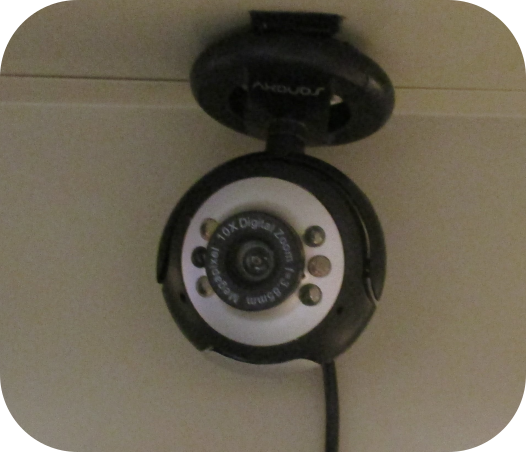

Each package can be built in any order, but Confighelper must be installed first, Gpgmailer must be installed second, and then batwatch, netcheck, torwatchdog, and watchman may be installed in any order. Each of these projects has specific build instructions on their respective project pages.
It is important to know if your SecureDrop instance stops running. torwatchdog and gpgmailer can be used together to provide you with encrypted email notifications if your SecureDrop instance goes down. It is recommended that you install this monitoring software on several geographically diverse computers to make it harder for adversaries effectively disable it.
When we still intended to actually create a SecureDrop instance, we created a custom server cabinet to house our SecureDrop servers. For the cabinet, we used a steal lockable cabinet and drilled holes (with a hole saw) so that the servers could get access to electricity and wired Ethernet. On the doors of the cabinet, we attached a staple safety hasp which allowed us to lock the cabinet with a high security padlock.

It is critical for any SecureDrop instance to have excellent physical security. batwatch, netcheck, gpgmailer, watchman, and a custom server cabinet can be used together to make it extremely difficult for someone to gain physical access to SecureDrop servers and go undetected.
Many security systems can be foiled by simply cutting off their connection the Internet. Technically speaking, Parkbench is no different. However, what makes the Parkbench intrusion detection system special is that it supports any number of backup Internet connections and is designed to cycle through them quickly. Any Internet connection supported by Ubuntu's Network Manager is supported.
The SecureDrop Application Server and SecureDrop Monitor are simply plugged into the pfSense firewall switch. The Parkbench monitoring server should be plugged into the pfSense firewall switch, the camera, and the USB hot spots. Of course, the secure viewing station should never be plugged into anything but power.
Within the cabinet, we attached the USB webcam to the top of the cabinet and positioned the camera so that it would be pointing at the head of the person opening the cabinet. We added permanent lighting in the cabinet to better light any potential intruder. To make the cabinet less conspicuous, we affixed the loop side of hook and loop tape to the inside of the seams of the cabinet doors. This stopped most of the light from being visible from outside of the cabinet when it was closed.
The watchman camera software is specifically programmed to allow for the user to plug and unplug the USB camera at will. This allows for the camera to be easily temporarily disabled so that an adversary cannot discretely use it to their advantage. To help ensure the camera is plugged back in before the cabinet is locked, we clip the USB-A end of the camera to the outside of the cabinet. This way, if we try to close the cabinet without plugging camera back in, the cabinet door will not shut.
Most USB Webcams today have an integrated microphone. We recommend disabling this microphone so that an adversary cannot use it to their advantage. Unfortunately, simply removing the webcam microphone will likely render the webcam completely inoperative. However, from our experience, if you simply bridge the solder points where the microphone should be, the camera will work as expected.
All powered devices should be plugged into an uninterruptable power supply (UPS). The UPS should be sufficient to provide power for several hours after main power is lost. If the UPS completely drains and nobody is available to physically monitor the servers, one must assume the servers are compromised.
The UPS should support a communications link for power status notifications. The communications link should be connected to the Parkbench server where batwatch is installed.
It is important to note that this setup might be vulnerable to several side channel attacks:

Power monitoring attack
Electromagnetic attack
Acoustic attack
When we were still committed to implementing a SecureDrop instance, we were going to attempt to mitigate these attacks. We had acquired a power line conditioner to attempt to mitigate the power monitoring attack. To mitigate the acoustic attack, we planned to write a small computer program to produce low volume static from the Parkbench monitoring server's speakers. To mitigate the electromagnetic attack, we were going to try to attach metal screening to the insides of the cabinet.
I cannot say for certain if any of these mitigation measures would have worked. If you decide to implement these mitigations, please do your own research and thoroughly test them.